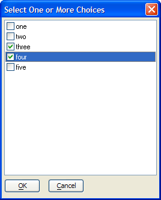

UI_GET_LIST3()
Syntax
Selected_List as C = UI_GET_LIST3( Title as C, Default_Selection as C, Choices as C )
Argument | Description |
Selected_List | A CR-LF delimited list of user selections. |
Title | The title of the dialog box. |
Default_Selection | The initial user selection. |
Choices | A CR-LF delimited list of choices. |
Description
The UI_GET_LIST3() function displays a check box - list box that allows the user to make multiple selections.

Limitations
Desktop applications only.
Examples
dim choices as C choices = <<%a% one two three four five %a% ? ui_get_list3("Select One or More Choices", "three", choices) = three four |
See Also
((User Interaction _UI_ Functions|User Interaction (UI) Functions))